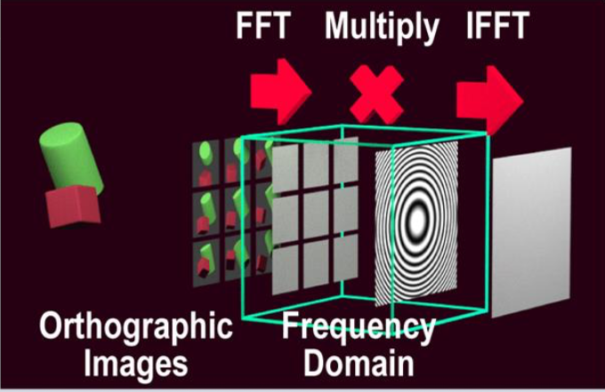

Orthographic Images to Hologram

While the layer-based method we just discussed slices a 3D scene by depth (the z-axis), the common orthographic method slices the 3D scene by angle (viewing direction). This approach is widely known in the field as the holographic stereogram or the ray-sampling method.
Here is the standard, step-by-step algorithmic pipeline for a common orthographic CGH approach.
1. Ray Sampling (Orthographic Rendering)
Instead of cutting the 3D object into flat depth slices, the algorithm sets up a virtual orthographic camera in a 3D rendering engine (like Blender or OpenGL).
An orthographic camera has no perspective; it only captures light rays that are traveling perfectly parallel to one another. The algorithm moves this camera along a grid, capturing hundreds or thousands of 2D images of the 3D scene from slightly different angles (e.g., \(-10^\circ\) to \(+10^\circ\) horizontally and vertically) . Because each image consists only of parallel rays, a single image mathematically represents light traveling in one specific direction.
2. The Fourier Transform (Images to Spectra)
The algorithm takes the first orthographic image and applies a 2D Fast Fourier Transform (FFT).
Because the image represents a single viewing angle, its Fourier transform represents the spatial-frequency spectrum required to recreate that specific angle. The algorithm repeats this FFT process individually for every single orthographic image captured in Step 1.
3. Assembling the Master Grid (Frequency Tiling)
Next, the algorithm creates a massive, empty 2D matrix representing the total spatial-frequency domain (\(k\)-space) of the final hologram.
It takes the Fourier-transformed data from each image and pastes it into this master grid as a small "tile" or "patch" .
- The FFT of the straight-on (\(0^\circ\)) image is pasted dead center.
- The FFT of the \(5^\circ\) left-view image is pasted into a tile on the left side of the grid.
- The FFT of the \(5^\circ\) right-view image is pasted into a tile on the right side.
By systematically tiling all these spectra together without overlapping them, the algorithm builds a complete, unified map of the entire 3D light field in the frequency domain.
4. The Inverse Transform (Back to the Hologram Plane)
Once the master frequency grid is fully populated with all the angular tiles, the algorithm applies one giant Inverse Fast Fourier Transform (IFFT) to the entire matrix.
This mathematical operation converts the data from the frequency domain (angles) back into the spatial domain (the physical coordinates on the glass or spatial light modulator). The result is a highly complex 2D matrix containing both amplitude and phase values. This matrix represents the complete interference pattern required to project all those different angles simultaneously.
5. Phase Extraction and Optimization
Just like in the layer-based method, this resulting complex wave contains both amplitude and phase, but physical manufacturing usually only allows for phase control.
At this point, a standard orthographic pipeline will either simply discard the amplitude and keep the phase (which causes some image degradation) or feed this complex wave into an iterative optimization loop, like the Gerchberg-Saxton algorithm or Error Diffusion, to refine it into a phase-only hologram that can be physically etched or displayed.